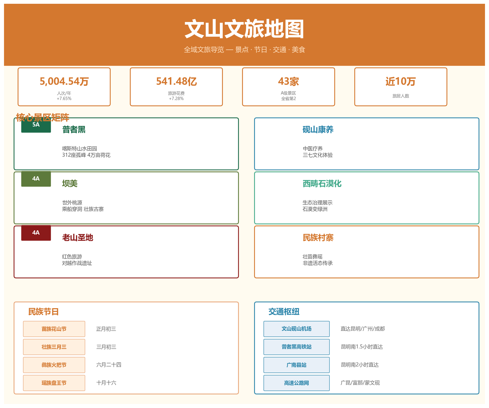

文山文旅地图

跨分类综合笔记 — 景点、民族节日、交通攻略、美食特产的全方位文旅导览。
一、2025 年旅游大数据
| 指标 | 数值 | 同比 |
|---|---|---|
| 接待游客 | 5,004.54 万人次 | +7.65% |
| 旅游花费 | 541.48 亿元 | +7.28% |
| 旅居人数 | 近 10 万人 | — |
| A 级景区 | 43 家（全省第二） | — |
数据来源：文旅深度报告
二、核心景区矩阵
2.1 普者黑 — 5A 喀斯特山水田园
| 项目 | 详情 |
|---|---|
| 等级 | 国家 5A 级旅游景区 |
| 位置 | 丘北县 |
| 特色 | 312 座孤峰、83 个溶洞、54 个湖泊，万亩荷塘 |
| 最佳季节 | 6-8 月（荷花盛开） |
| 交通 | 普者黑高铁站距景区 9.8 km；文山砚山机场 85.7 km |
核心体验：乘柳叶舟穿行荷花水路、登青龙山观全景、天鹅湖观鸟、仙人洞村彝族风情。
最新动态（2026）：推进"四个一体化"开发重构，向世界级旅游景区目标迈进。
2.2 坝美 — 4A 世外桃源
| 项目 | 详情 |
|---|---|
| 等级 | 国家 4A 级旅游景区 |
| 位置 | 广南县 |
| 特色 | "林尽水源，便得一山，山有小口，仿佛若有光"——乘船穿溶洞而入的隐世村落 |
| 最佳季节 | 全年皆宜，春季桃花盛开最佳 |
核心体验：三段溶洞水陆行舟、壮家吊脚楼、田园耕作实景。
2.3 老山圣地 — 4A 红色旅游
| 项目 | 详情 |
|---|---|
| 等级 | 国家 4A 级旅游景区 |
| 位置 | 麻栗坡县 |
| 特色 | 对越自卫还击战主战场，爱国主义教育基地 |
| 核心点位 | 老山主峰、老山作战纪念馆、烈士陵园 |
2.4 砚山康养 — 中医药养生新业态
| 项目 | 详情 |
|---|---|
| 位置 | 砚山县 |
| 特色 | 中医药康养 + 三七养生旅游，融合中医理疗、药膳、森林康养 |
| 定位 | 新兴康养旅游目的地 |
2.5 其他重要景区
全州 43 家 A 级景区，除上述 4 个核心景区外还包括：
| 景区 | 等级 | 位置 | 特色 |
|---|---|---|---|
| 西畴国家石漠公园 | 4A | 西畴 | "搬家不如搬石头"的石漠化治理奇迹 |
| 七都古镇 | 新建 | 文山市 | 历史文化街区 |
| 句町夜花街 | 新建 | 广南 | 句町文化主题夜游 |
| 雾缦云山 | 新建 | — | 客运索道观光 |
| 石斛湾民宿 | 精品民宿 | — | 石斛主题康养民宿 |
| 伟光星河营地 | 露营地 | — | 户外星空营地 |
详见：更多景点
三、民族节日年历
文山 11 个世居民族，一年四季节庆不断。以下是主要节日的时间轴：
| 时间 | 节日 | 民族 | 看点 |
|---|---|---|---|
| 农历正月 | 踩花山 | 苗族 | 芦笙舞、斗牛、对歌、爬花杆 |
| 农历三月 | 陇端节 | 壮族 | "壮族的春节"，祭龙、对歌、抛绣球 |
| 农历三月三 | 壮族三月三 | 壮族 | 五色糯米饭、抢花炮、扁担舞 |
| 农历六月 | 火把节 | 彝族 | 打歌、撒火把、斗牛、赛马 |
| 农历六月 | 盘王节 | 瑶族 | 长鼓舞、祭盘王 |
| 农历十月 | 牛王节 | 壮族 | 祭祀耕牛、做糍粑 |
| 公历 4 月 | 泼水节 | 傣族 | 泼水祝福、放高升、龙舟赛 |
四、非遗文化体验
| 项目 | 级别 | 类型 |
|---|---|---|
| 坡芽歌书 | 国家级非遗 | 壮族古老文字符号与音乐遗产 |
| 铜鼓舞 | 国家级非遗 | 彝族、壮族祭祀舞蹈，文山为中国铜鼓之乡 |
| 壮族刺绣 | 省级非遗 | 精美壮锦手工技艺 |
| 苗族蜡染 | 省级非遗 | 传统印染工艺 |
五、交通攻略
外部抵达
| 方式 | 路线 | 时长参考 |
|---|---|---|
| 高铁 | 昆明南 → 普者黑站 | 约 1 小时 |
| 高铁 | 南宁 → 普者黑站 | 约 2.5 小时 |
| 飞机 | 飞昆明长水 → 转高铁或自驾 | — |
| 飞机 | 飞文山砚山机场（航线有限） | — |
| 自驾 | G80 广昆高速、G5615 天猴高速 | — |
内部交通
| 区间 | 推荐方式 | 参考时间 |
|---|---|---|
| 普者黑站 → 普者黑景区 | 公交/出租车 | 约 20 分钟 |
| 文山市 → 丘北（普者黑） | 大巴/自驾 | 约 1.5 小时 |
| 文山市 → 广南（坝美） | 大巴/自驾 | 约 2.5 小时 |
| 文山市 → 麻栗坡（老山） | 自驾/包车 | 约 2 小时 |
| 文山市 → 砚山 | 自驾 | 约 30 分钟 |
六、推荐旅游线路
线路一：喀斯特山水经典（3-4 天）
昆明 → 普者黑（2 天） → 坝美（1 天） → 返回 - Day 1-2：普者黑荷花水路、青龙山、仙人洞村 - Day 3：坝美溶洞入村、壮乡田园
线路二：红色 + 边境深度（3 天）
文山 → 麻栗坡老山圣地（1 天） → 天保口岸（半天） → 西畴石漠公园（1 天） - 老山作战纪念馆、主峰 - 中越边境口岸风情 - "西畴精神"实景体验
线路三：康养休闲慢旅行（3-4 天）
文山 → 砚山康养（1-2 天） → 普者黑（2 天） - 中医药理疗、三七药膳 - 普者黑慢游
线路四：民族风情全景（5-7 天）
覆盖普者黑 + 坝美 + 老山 + 配合节庆时间 - 按民族节日年历选择出行时间，收获沉浸式文化体验
详见：旅游线路规划
七、美食与特产地图
| 地区 | 必尝 | 伴手礼 |
|---|---|---|
| 文山市 | 三七汽锅鸡、文山凉品 | 三七制品 |
| 丘北 | 荷花宴、辣椒炒肉 | 丘北辣椒 |
| 广南 | 八宝米饭、岜夯鸡 | 广南八宝米 |
| 富宁 | 八角香料菜 | 富宁八角 |
| 砚山 | 三七药膳 | 铁皮石斛 |
| 麻栗坡 | 边境特色小吃 | 老山茶 |
详见：特色农产品
合成来源：06-文化旅游（12 篇）、04-人口与民族（11 篇）、03-行政区划（9 篇）、08-交通与基础设施（8 篇）、07-特产与资源（8 篇）中文旅相关笔记。数据截止 2026 年 5 月。